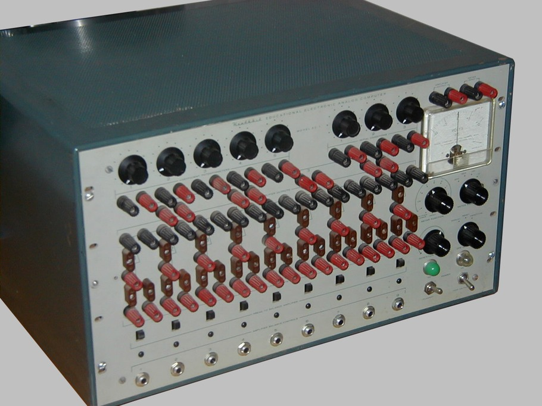
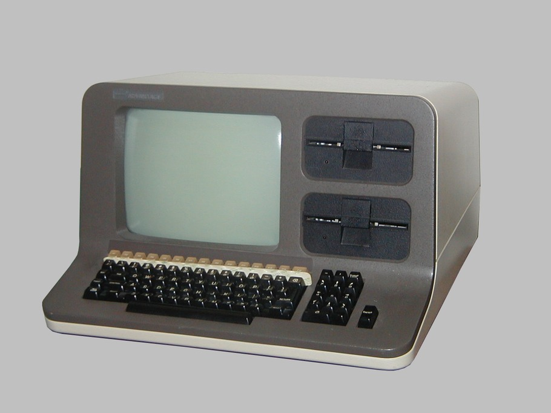
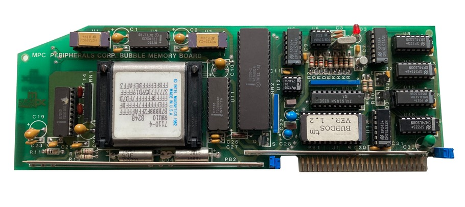
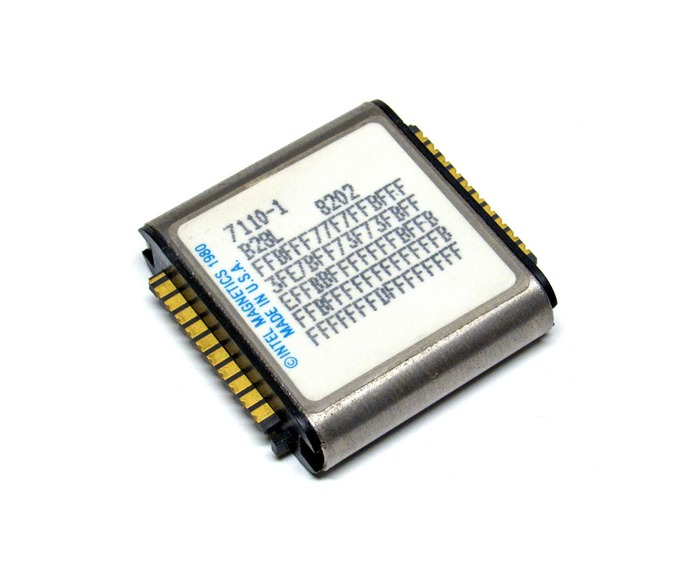
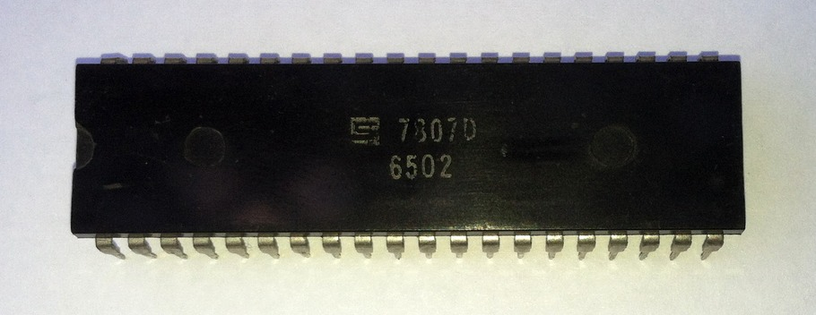
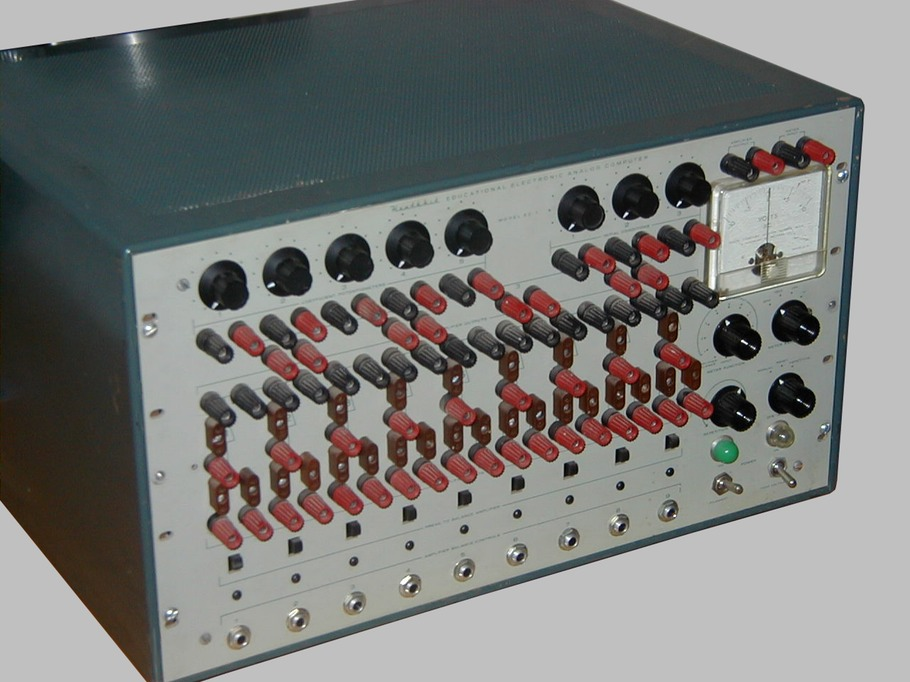
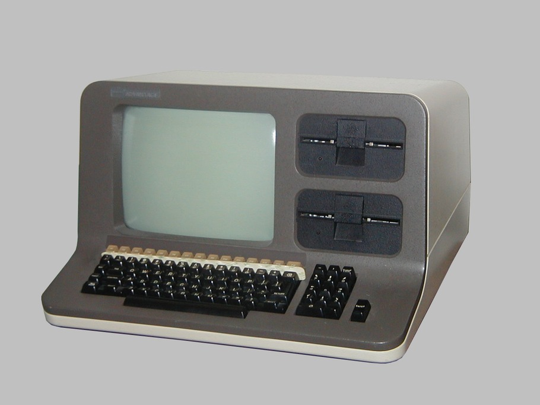
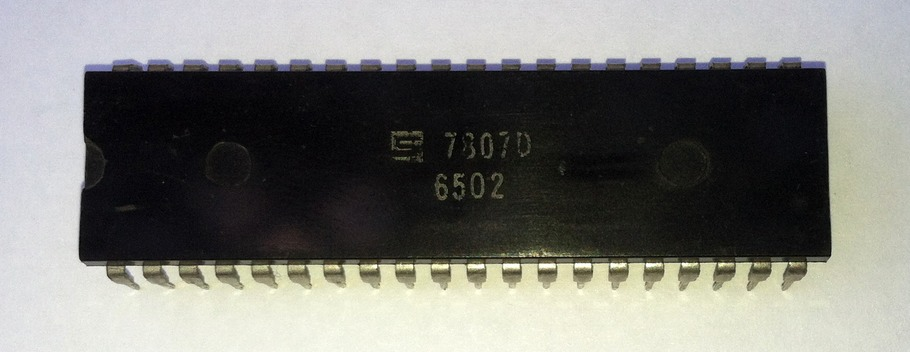

Heathkit EC-1

Northstar Advantage


7110 one megabit bubble memory device

8080 and 6502 microprocessors
A museum of 20th century
technology
The Heathkit analog Computer (top) is from 1960. Yes, it is analog and uses tubes.
The Northstar digital computer was designed for office work in the 1980s.
MPC Peripherals Bubble Memory card (1982)
Here is one of the oddest and possibly rarest cards for the Apple II computer: the Bubble Memory acts like a disk drive to boot up the computer.
At $900 it was an expensive add-on for a $1200 computer.
An Apple II with the Bubble card inside came from Apogee, Inc., a full-service special effects company involved in the effects of the “Battlestar Galactica” movie and “Star Trek - The Motion Picture.”
The two most popular microprocessor chips during the 8-bit era were the 8080 and the 6502.
Our “mini” computers contain an entire board (versus a microprocessor) and are based on the LSI - 11 series.
One of the strangest computers is the Nixdorf: when the program card is changed, so is the CPU (central processing unit).
Not bad for 1980s.
And what is this new thing called the ARPANET?

Heathkit EC-1

Northstar Advantage
7110 one megabit bubble memory device

8080 and 6502 microprocessors